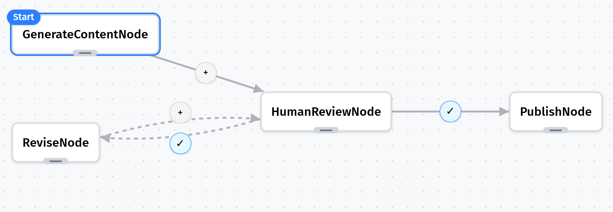

Human-in-the-Loop Content Creation
The Problem
Modern AI workflows often need human oversight at critical decision points. For instance, when an AI generates content, a human might need to review it before publication.
Solution with Grapheteria
Grapheteria excels at creating human-in-the-loop workflows with minimal effort. Here’s how we’ll build an elegant content creation system:
- User Input: A user suggests a topic for an article
- AI Generation: The system uses AI to generate the article content
- Human Review: A human reviewer examines the content before publication
- Quality Control: If the content doesn’t meet standards, the reviewer provides specific feedback
- Iteration: The system revises and resubmits until the content achieves the desired quality
- Publication: Once approved, the content moves to publication
First, let’s create our LLM utility
# utils.py
import os
from openai import OpenAI
from dotenv import load_dotenv
# Load environment variables from .env file
load_dotenv()
def call_llm(prompt, max_tokens=500):
"""Call OpenAI's API to generate text."""
client = OpenAI(api_key=os.environ.get("OPENAI_API_KEY"))
try:
response = client.chat.completions.create(
model="gpt-3.5-turbo",
messages=[
{"role": "system", "content": "You are a helpful article writer."},
{"role": "user", "content": prompt}
],
max_tokens=max_tokens,
temperature=0.7
)
return response.choices[0].message.content
except Exception as e:
print(f"Error calling OpenAI API: {e}")
return f"Failed to generate article about {prompt}"
Now let’s create our workflow nodes
# nodes.py
from grapheteria import Node
from utils import call_llm
class GenerateContentNode(Node):
async def prepare(self, shared, request_input):
topic = await request_input(
prompt="What topic would you like an article about?",
input_type="text"
)
shared["topic"] = topic
return topic
def execute(self, topic):
prompt = f"Write an informative article about {topic}"
article = call_llm(prompt)
return article
def cleanup(self, shared, prep_result, exec_result):
shared["article"] = exec_result
class HumanReviewNode(Node):
async def prepare(self, shared, request_input):
print(f"Article about '{shared['topic']}':")
print(shared['article'][:150] + "...")
response = await request_input(
prompt="Do you approve this content?",
options=["approve", "reject"],
input_type="select"
)
shared["human_decision"] = response
class PublishNode(Node):
async def prepare(self, shared, _):
print(f"🎉 Publishing '{shared['topic']}' article")
# In a real app, you might save to a database or CMS
# await write_to_db(shared['article'])
class ReviseNode(Node):
async def prepare(self, shared, request_input):
print(f"✏️ Article needs revision")
feedback = await request_input(
prompt="What needs to be improved?",
input_type="text"
)
return {
'topic':shared['topic'],
'content': shared['article'],
'feedback': feedback
}
async def execute(self, data):
new_prompt = f"Topic: {data['topic']}. Revise this article: {data['content'][:200]}... Based on feedback: {data['feedback']}"
revised = call_llm(new_prompt, max_tokens=700)
return revised
def cleanup(self, shared, prep_result, exec_result):
shared["article"] = exec_result
Define and run the workflow
# main.py
import asyncio
from grapheteria import WorkflowEngine
from nodes import *
# Create nodes
generate = GenerateContentNode(id="generate_content")
review = HumanReviewNode(id="human_review")
publish = PublishNode(id="publish")
revise = ReviseNode(id="revise")
# Connect with conditional paths
generate > review
review - "shared['human_decision'] == 'approve'" > publish
review - "shared['human_decision'] == 'reject'" > revise
revise > review # Loop back for another review
# Create the workflow engine
workflow = WorkflowEngine(
nodes=[generate, review, publish, revise],
start=generate
)
async def main():
user_input = None
while True:
continue_workflow = await workflow.run(user_input)
# If workflow is waiting for input
if workflow.execution_state.awaiting_input:
request = workflow.execution_state.awaiting_input
request_id = request['request_id']
prompt = request['prompt']
print(f"\n[Input required] {prompt}")
if request['input_type'] == 'select':
for i, option in enumerate(request['options']):
print(f"{i+1}. {option}")
choice = input("Enter your choice (number): ")
user_input = request['options'][int(choice)-1]
else:
user_input = input("Your response: ")
await workflow.step({request_id: user_input})
elif not continue_workflow:
break
# Run the workflow
asyncio.run(main())
Workflow JSON Schema
{
"start": "generate_content",
"nodes": [{
"id": "generate_content",
"class": "GenerateContentNode" },
{ "id": "human_review",
"class": "HumanReviewNode" },
{ "id": "publish",
"class": "PublishNode" },
{ "id": "revise",
"class": "ReviseNode" }],
"edges": [{
"from": "generate_content",
"to": "human_review" },
{ "from": "human_review",
"to": "publish",
"condition": "shared['human_decision'] == 'approve'" },
{ "from": "human_review",
"to": "revise",
"condition": "shared['human_decision'] == 'reject'" },
{ "from": "revise",
"to": "human_review" }]
}
Key Features Demonstrated
- User Input - Workflow pauses twice for human input (topic and approval)
- AI Integration - Calls external LLM API for content generation
- Feedback Loop - Rejected content goes through revision cycle
- Decision Points - Human makes the publish/revise decision
- State Persistence - All data flows through the shared state
As always run grapheteria in your terminal to launch the UI and visualize/run this workflow.

The entire code for this example, along with deployment instructions, is available here. This pattern works great for any scenario where you need AI to do the heavy lifting while humans retain final approval authority!